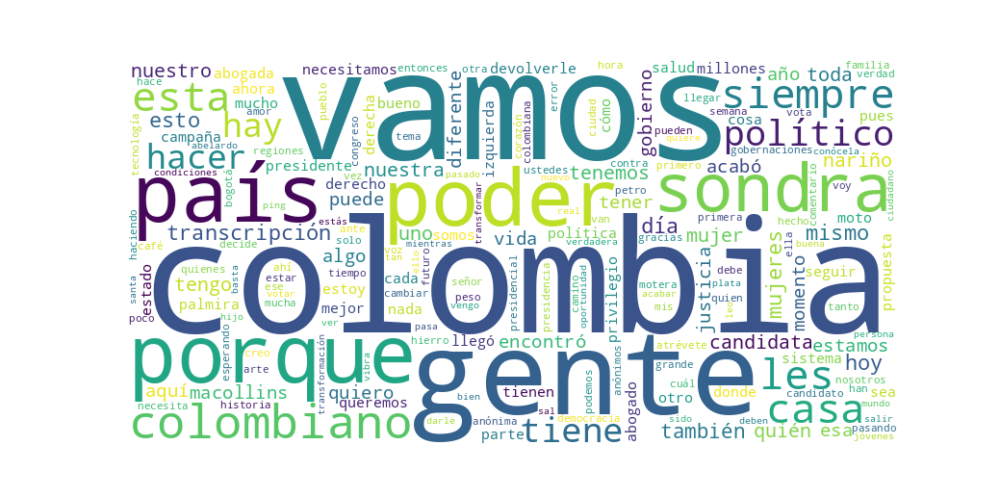

Seguidores: 90,486
1. Perfil de Comunicación: El estilo de comunicación de Sondra Macollins es predominantemente informal, directo y cercano. Se dirige al público con un lenguaje accesible y coloquial, utilizando un tono conversacional que busca generar identificación y romper con la formalidad asociada a la política tradicional. Su discurso está diseñado para conectar emocionalmente, empleando frecuentemente preguntas retóricas, interpelaciones directas ("¿Estás cansado?", "¿Qué opinas?") y una alta interactividad (invitando a comentarios y preguntas). Aunque su formación como abogada le brinda conocimientos técnicos, evita el lenguaje especializado para favorecer un mensaje claro y popular, con un uso estratégico de hashtags y elementos visuales propios de las redes sociales.
2. Temas Principales: * Antipolítica y "Devolver el Poder a la Gente": El eje central de su discurso es un rechazo frontal a la clase política tradicional ("los mismos de siempre", "los políticos de bolsillo"). Aborda este tema prometiendo una ruptura total, utilizando eslóganes como "Llegó el momento de los anónimos" y proponiendo mecanismos como referendos y veeduría ciudadana digital para que "la gente" controle directamente. * Corrupción y Transparencia: Denuncia constantemente la corrupción, los privilegios de la clase política ("ciudadanos VIP", "salarios millonarios") y la opacidad en la gestión pública. Propone soluciones tecnológicas radicales como el uso de blockchain e Inteligencia Artificial para una "transparencia absoluta en tiempo real" y una auditoría ciudadana de los recursos públicos. * Reforma del Estado: Plantea una transformación estructural profunda, siendo su propuesta emblemática la eliminación de las 32 gobernaciones para crear "regiones fuertes" autónomas. También promete reducir el Congreso "en al menos 33%", fusionar ministerios y reestructurar completamente el sistema de justicia, al que acusa de estar politizado y ser "para los de ruana". * Salud y Servicios Públicos: Critica con dureza el sistema de salud, usando casos concretos (como el de "Doña Cecilia") para ejemplificar su fracaso. Lo presenta como un síntoma de la mala gestión y la corrupción estatal, vinculándolo al tema principal de la negligencia de "los de siempre". * Tecnología y Modernización: Presenta la tecnología no solo como una herramienta contra la corrupción, sino como un pilar para modernizar el país. Habla de implementar IA para auditar el estado, crear "universidades gamer" y reconocer habilidades digitales de los jóvenes para combatir el desempleo.
3. Tono y Sentimiento Dominante: El tono general es crítico, confrontacional y de ruptura. Se posiciona como una voz externa que denuncia un sistema podrido. Sin embargo, este diagnóstico negativo se combina con un tono esperanzador y propositivo dirigido a quienes se sienten excluidos ("los invisibles", "los anónimos"). Hay un fuerte llamado a la rebeldía ("¡Rebélate!") y a la acción ("Atrévete"). El sentimiento dominante es la indignación canalizada hacia la construcción de una alternativa ("un camino distinto").
4. Palabras Clave de Poder: * "Devolver el poder a la gente" / "El poder es de la gente": Eslogan central que enmarca toda su propuesta como una transferencia de soberanía. * "Los mismos de siempre": Enemigo abstracto que aglutina a la clase política tradicional, tanto de izquierda como de derecha. * "Atrévete" / "Rebélate": Llamados a la acción dirigidos a un electorado desencantado. * "Todos a la Casa de Nariño" (#TodosALaCasaDeNariño): Eslogan de campaña que simboliza la toma colectiva del poder. * "Transparencia absoluta en tiempo real": Promesa concreta de un nuevo modelo de gestión. * "Candidata anónima": Se autodenomina así para enfatizar su carácter outsider y su identificación con el ciudadano común. * "Tecnología" / "IA" / "Blockchain": Lexicón asociado a modernidad, eficiencia y lucha contra la corrupción. * "Se les acabó": Frase de cierre recurrente que refuerza la narrativa de fin de ciclo para la vieja política.
5. Conclusión Estratégica: La estrategia de comunicación de Sondra Macollins apunta directamente al electorado desencantado, joven y urbano que rechaza el establishment político bipartidista. Combina un discurso anti-sistema radical con propuestas concretas de alta disruptividad (eliminar gobernaciones, IA para auditar el estado) y un estilo de comunicación moderno y visceral propio de las redes sociales. Su perfil se construye como el de una outsider fuerte e independiente (abogada, motera, artista), contrastando con la imagen del político tradicional. Busca evocar una sensación de empoderamiento colectivo ("el pueblo se para de frente"), ofreciendo no solo una crítica, sino una identidad ("los anónimos") y una misión épica: tomar simbólicamente la Casa de Nariño para devolvérsela a la ciudadanía. Su estrategia es de polarización positiva: dividir el campo entre "los de siempre" (corruptos, privilegiados) y "la gente"/"los anónimos" (víctimas, futuro), situándose ella como la única canal legítima de esta última.
Candidato: Sondra Macollins (Sondra Con O)
El patrón de éxito de sus videos más exitosos se basa en una fórmula dual de confrontación política y cercanía humana. Los videos de mayor engagement combinan un ataque frontal y emocional ("indignado") contra el establecimiento político y casos específicos de corrupción, con momentos de profunda conexión personal, espiritual y cotidiana. No es un discurso técnico, sino una comunicación visceral que alterna entre la denuncia severa y la invitación íntima a la vida privada del candidato, creando una imagen de "outsider" valiente y auténtica.
Su discurso apela a un electorado desencantado, cansado de la política tradicional y susceptible a un mensaje de cambio radical. No habla exclusivamente a su base leal, sino que busca capturar a: * Votantes indignados: Personas frustradas con los escándalos de corrupción y la percepción de impunidad. * Jóvenes y desempleados: A quienes dirige propuestas laborales alternativas y un mensaje de que "son el presente". * Indecisos que valoran la autenticidad: Personas que conectan con su tono personal, espiritual y no-político (gatitos, familia, reflexiones). * Anti-petrismo/anti-establishment: Ciudadanos críticos del gobierno actual y de todo el espectro político tradicional.
La clave fundamental del poder de su discurso es la fusión de una retórica anti-sistema, dura y confrontacional, con una personalidad pública cálida, espiritual y profundamente humana. Ella no es solo la fiscal que denuncia; es también la vecina que adopta gatitos y reflexiona sobre la fe. Esta dualidad la hace imbatible en el terreno del engagement digital: genera una reacción emocional intensa (indignación) que se ve "perdonada" y equilibrada por momentos de genuina calidez. Lo que la diferencia del discurso político tradicional es esta autenticidad calculada: no evita el ataque frontal, pero lo envuelve en una narrativa personal que la hace parecer accesible y real, no un producto del sistema que critica. Su eslogan #TodosALaCasaDeNariño no es solo una promesa política; en su contenido exitoso, se siente como una invitación personal a un cambio de era.

Caption: ¡La denuncia de @noticiascaracol sobre los posibles vínculos entre #Petro y alias #PapáPitufo es gravísima! 😠 Esto es una amenaza contra la democracia. Exijo que se muestren todas las pruebas y que la verdad sea contada al país. #SondraConO #SondraMacollins #TodosALaCasaDeNariño
Likes: 167 | Comentarios: 145 | Reproducciones: 1,738
Ver en InstagramCaption: Estamos haciendo historia, somos varias mujeres candidatas a la presidencia, ¡un triunfo para la democracia! ✊❤️ Yo soy una mujer que va independiente, y baso mi ideología en la honestidad y la justicia. Conóceme, atrévete a algo diferente #SondraConO #SondraMacollins #TodosALaCasaDeNariño #mujer
Likes: 141 | Comentarios: 142 | Reproducciones: 1,482
Ver en InstagramCaption: Estos son mis planes de reconexión en esta Semana Santa 😮💨 ¿Y tú cómo vives esta semana espiritual? #SondraMacollins #SondraConO #SemanaSanta
Likes: 109 | Comentarios: 71 | Reproducciones: 1,192
Ver en Instagram